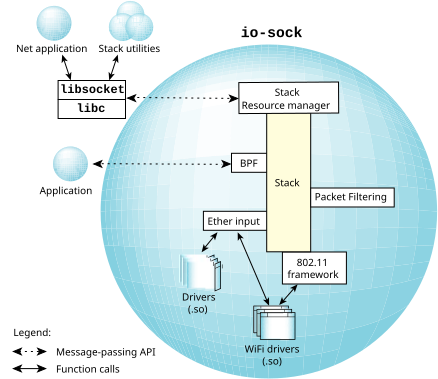

The io-sock network stack is very similar in architecture to other component subsystems inside of the QNX OS.
At the bottom layer are drivers that provide the mechanism for passing data to, and receiving data from, the hardware. The drivers hook into a multi-threaded packet-processing layer that passes them to the appropriate multi-threaded IP and upper-layer protocol-processing components (TCP and UDP).
In QNX OS, a resource
manager forms a layer on top of the stack. The resource manager acts as the
message-passing intermediary between the stack and user applications. It provides a
standardized type of interface involving open(),
read(), write(), and
ioctl() that uses a message stream to communicate with networking
applications. Networking applications written by the user link with the socket library.
The socket library converts the message-passing interface exposed by the stack into a
standard BSD-style socket layer API, which is the standard for most networking code
today (see Socket API
).
In addition to the socket-level API, there are also other, programmatic interfaces into the stack that are provided for filtering to occur.

At the driver layer, there are interfaces for Ethernet traffic (used by all Ethernet drivers), and an interface into the stack for 802.11 management frames from wireless drivers. You can load drivers (built as DLLs for dynamic linking and prefixed with devs-*) into the stack using the io-sock option -d.
The stack also includes hooks for packet filtering. The main interfaces supported for filtering are:
For more information, see Packet
Filtering.